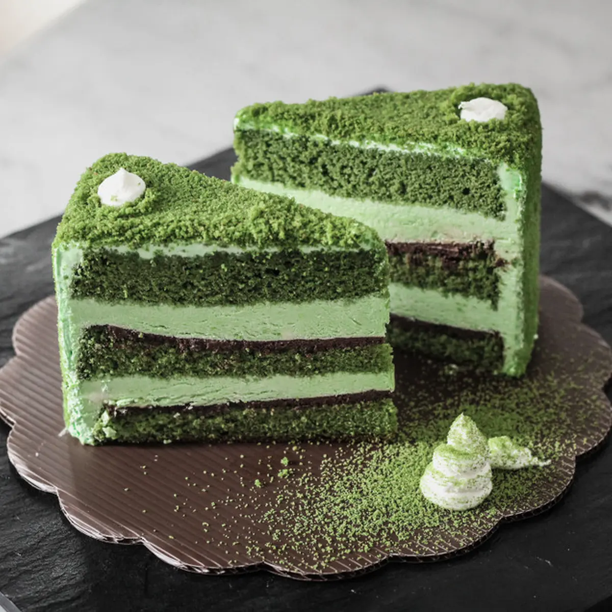

Menu Andalan Kami
Nikmati menu andalan yang menjadi favorit customer Kami
Matcha
Matcha Es Krim

Matcha Kue
Matcha Latte
JKT48 Cafe merupakan sebuah startup kopi retail yang ingin menyajikan high quality Coffee untuk para pelanggannya.
Dapat dibeli melalui
Nikmati menu andalan yang menjadi favorit customer Kami
Matcha
Matcha Es Krim
Matcha Kue
Matcha Latte
Didirikan pada 2017, JKT48 Cafe merupakan sebuah startup kopi retail yang ingin menyajikan kopi dengan kualitas tinggi untuk para pelanggannya. Nama Kuy yang diambil dari "yuk" yang merupakan harapan kami untuk mengajak semua yang terlibat dalam bisnis kami untuk bersama-sama menikmati sajian kopi yang berkualitas.

Kopi yang kami jual, hanya dari petani terpilih, dan berkualitas tinggi diproses secara sempurna dan diteruskan oleh para barista handal, yang penuh semangat dalam menyiapkan segelas kebahagiaan spesial untuk anda
Kami berinvestasi dalam rasa - mulai dari pemilihan biji, metode pemanggangan, hingga barista dengan sertifikat internasional.

Founder JKT48 Cafe

Head of Marketing

Barista

Barista
Kami berikan fakta dan data, karena kepuasan konsumen selalu nomor 1 untuk kami.

Mahasiswa/Penyanyi
"Perdana kesini langsung merasa cocok dari segi tempat dan rasa. Baristanya ramah dan pelayanannya maksimal, tidak sungkan bertanya keinginan pengunjung."

Artis
"Asik buat santai sm tmn2, tempatnya nyaman dan yg bikin seru banyak game2nya yg bs dimainkan bareng tmn2 atau saudara, menunya enak2, pokoknya recomend banget deh tempatnya wajib coba guys!!! Pelayanannya ramah banget 🤗."

My Love
"Tempat nya nyaman sekali pasti kalo kalian dateng betah ... selain tempat yang nyaman lalu pelayanan nya good banget... dan kalian yang datang ke JKT48 Cafe jangan lewatkan permainan yang disediakan oleh JKT48 Cafe , banyak banget game nya!"
Telp: +62 (853) 9213 8071
Email: fachry.sosialmedia@gmail.com
Instagram: @nomatter.human